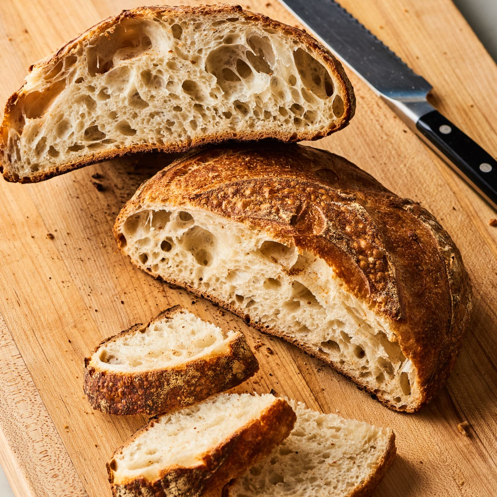

Sourdough Bread

Description
Sourdough bread is a naturally leavened bread with a tangy flavor, chewy texture, and crackly crust. It's made using a sourdough starter, which is a fermented mixture of flour and water that contains wild yeast and bacteria.
Ingredients
- Sourdough Starter
- Flour
- Salt
- Water
Steps
- Combine water, sourdough starter, salt and flour in bowl, and stirring to form a sticky dough ball.
- During the first two hours of the bulk fermentation, perform a series of stretches and folds, which will give the dough strength and elasticity.
- Shape the dough, let it rest, then shape it once more.
- Proof the dough in the fridge, ideally for 24 to 48 hours, though you can get away with a shorter proof.
- After the dough has proofed, turn it out onto a piece of parchment paper, score it; then transfer it to a preheated baking vessel.
- Transfer to a preheated Dutch oven. Bake covered at 450ºF for 30 minutes; uncover, lower the temperature to 400ºF, and bake for 15 minutes more.
- Remove from oven and let cool one hour before slicing.
Home